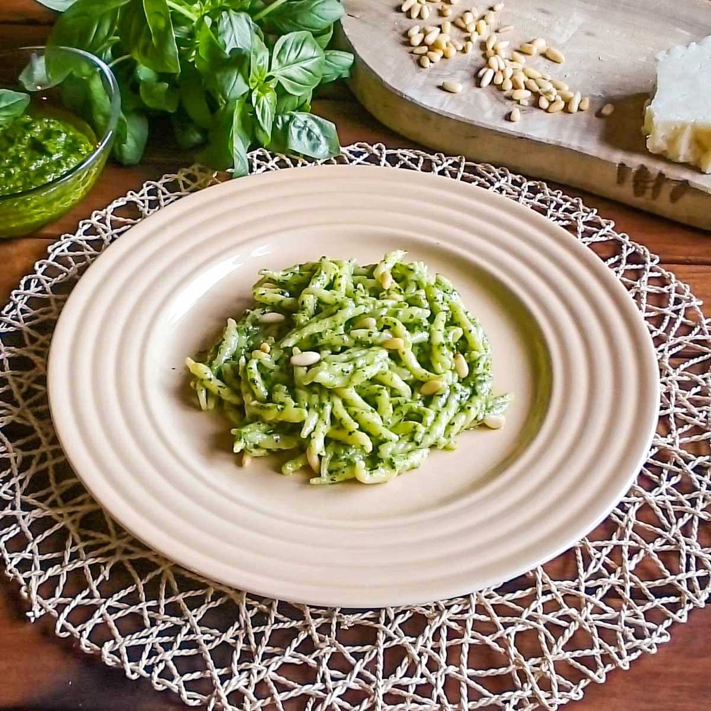

Pasta al pesto genovese

Description
Pasta al pesto is a traditional Ligurian dish made with fresh basil sauce, garlic, pine nuts,
Parmigiano, and olive oil, tossed with pasta for a fragrant, creamy meal.
Ingredients
- 350g trofie or trenette
- 50g fresh basil leaves
- 30g pine nuts
- 1 garlic clove
- 50g Parmigiano Reggiano, grated
- 20g Pecorino Sardo, grated
- 100ml extra virgin olive oil
- Salt
Steps
- Crush garlic and a few salt crystals
- Add basil leaves gradually, crushing gently
- Add pine nuts, then cheeses
- Slowly stir in olive oil until creamy
- Cook the pasta in salted boiling water
- Drain pasta (reserve a little water) and mix gently with the pesto, adding a spoon of cooking water to loosen if needed
- Serve immediately, with a sprinkle of Parmigiano on top
Home